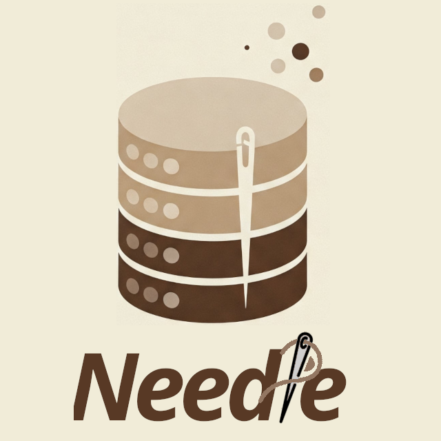
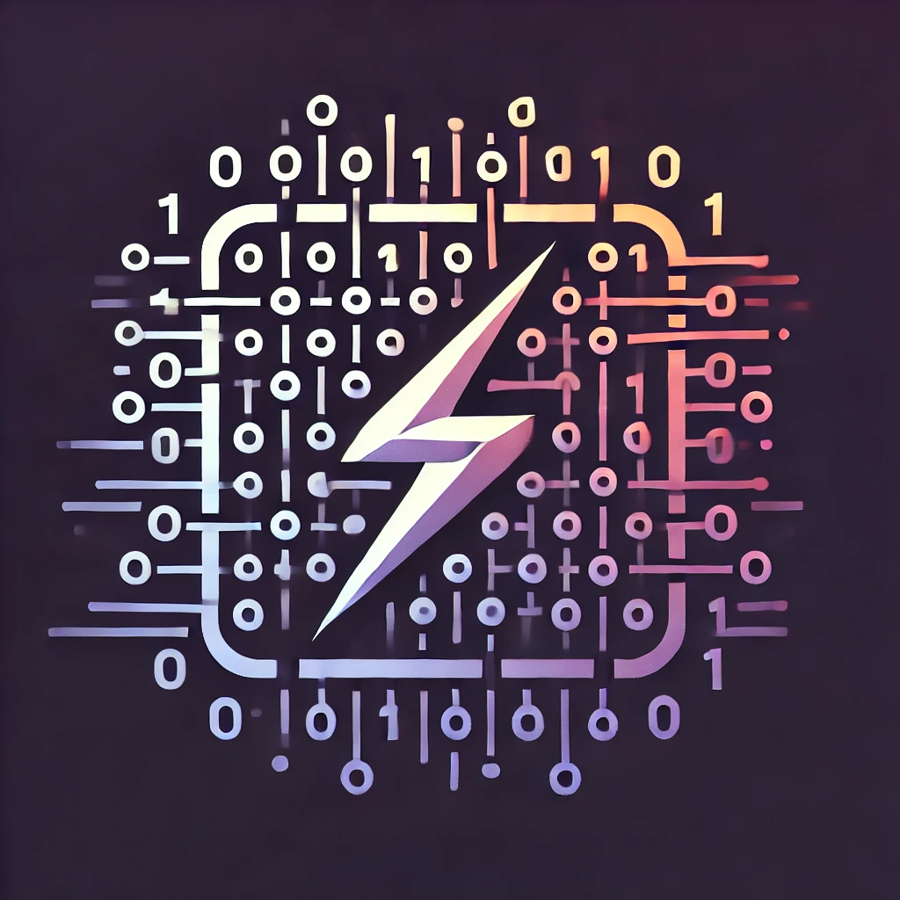

Abolfazl Asudeh 🔊
Associate Professor, Department of Computer Science, University of Illinois Chicago
A. Asudeh is an Associate Professor of Computer Science at the University of Illinois Chicago and the director of Innovative Data Exploration Laboratory (InDeX Lab).
His research focus is on Algorithm Design for Data and AI problems. He designs efficient, accurate, and responsible solutions that leverage Approximation, Randomized, and Computational Geometry Algorithms. His research interests include the interplay of Data/Algorithms/AI, Responsible Data Science, and Ranking and Approximate Nearest Neighbor Problems, among others.
Asudeh is a senior member of ACM and a senior member of IEEE. He serves as an Associate Editor for the IEEE Transactions on Knowledge and Data Engineering (TKDE), is a regular PC member of Data Management and AI flagship venues, and served as a VLDB Ambassador and the VLDB Endowment's Liaison to NSF.
His research is supported by NSF and has received recognitions, including the Communications of the ACM's (CACM) Research Highlight, Google's Research Scholar Award, SIGMOD 2019 Research Highlight Award, “Best of VLDB” 2020 (the special issue of VLDBJ), and SIGMOD 2017 Reproducibility Award.
-
Random-Access Ranked Retrieval and Similarity Search.
VectorDBRanking
Mohsen Dehghankar, A. Asudeh, Raghav Mittal, Suraj Shetiya, Gautam Das.
In KDD (2026) -
Sparse Attention as a Range Searching Problem: Towards an Inference-Efficient Index for KV Cache.
LLM Inference
Mohsen Dehghankar and A. Asudeh.
Preprint (2026) -
Unbiased Binning for Fairness-aware Attribute Representation.
FairnessResponsible Data
A. Asudeh, Zeinab Asoodeh, Bita Asoodeh, Omid Asudeh.
In VLDB (2026) -
Fair-Count-Min: Frequency Estimation under Equal Group-wise Approximation Factor.
Data-structureFairness
Nima Shahbazi, Stavros Sintos, A. Asudeh.
In SIGMOD (2026) -
On Fair Epsilon Nets and Geometric Hitting Sets.
Data-structureAlgorithmsFairness
Mohsen Dehghankar, Stavros Sintos, A. Asudeh.
In VLDB (2026) -
Dynamic Necklace Splitting.
[Slides]Algorithms
Rishi Advani, A. Asudeh, Mohsen Dehghankar, Stavros Sintos.
In ICDT (2026) -
A Survey on Reliability, Transparency, Accountability, and Fairness in LLM-based Multi-Agent Systems through the Responsibility Lens.
LLM Agents Responsible AI
Sana Ebrahimi and A. Asudeh.
Under Revision in ACM CSUR (2026) -
An Adversary-Resistant Multi-Agent LLM System via Credibility Scoring.
[Code] [Slides] [Video] LLM
Sana Ebrahimi, Mohsen Dehghankar, A. Asudeh.
In AACL, 2025 -
An Efficient Matrix Multiplication Algorithm for Accelerating Inference in Binary and Ternary Neural Networks.
[Code] [Video] LLMAlgorithmsMachineLearning
Mohsen Dehghankar, Mahdi Erfanian, A. Asudeh.
In ICML 2025. -
Rank It, Then Ask It: Input Reranking for Maximizing the Performance of LLMs on Symmetric Tasks.
[Slides][Code] LLMMachineLearning
Mohsen Dehghankar, A. Asudeh.
In KDD 2025. -
Mining the Minoria: Unknown, Under-represented, and Under-performing Minority Groups.
[Slides][Code] Responsible DataData-centric AI
Mohsen Dehghankar, A. Asudeh.
In VLDB, 2025. -
Fair Set Cover.
[Slides][Code] AlgorithmsFairness
Mohsen Dehghankar, Rahul Raychaudhury, Stavros Sintos, A. Asudeh.
In KDD, 2025. -
Evaluating the Feasibility of Sampling-Based Techniques for Training Multilayer Perceptrons.
[Slides] [Code] Computation at ScaleMachine Learning
Sana Ebrahimi, Rishi Advani, A. Asudeh.
In EDBT, 2025 -
HENN: A Hierarchical Epsilon Net Navigation Graph for Approximate Nearest Neighbor Search.
[Code]Data-structureAlgorithms
Mohsen Dehghankar and A. Asudeh.
Preprint (2025) -
Needle: A Generative-AI Powered Monte Carlo Method for Answering Complex Natural Language Queries on Multi-modal Data.
[Code] Image DatabasesLLM4DataMachineLearning
Mahdi Erfanian, Mohsen Dehghankar, A. Asudeh.
Preprint (2024)

Needle
Needle is a deployment-ready open-source image retrieval database with high accuracy for complex natural-language queries. It is fast, efficient, and precise, outperforming state-of-the-art methods while staying accessible to researchers, developers, and practitioners.
Detailed installation instructions: Getting Started.

RSR: Efficient Matrix Multiplication for Low-bit Neural Networks
RSR provides a fast approach to low-bit matrix multiplication for binary and ternary neural networks. The repository includes C++, NumPy, and PyTorch implementations with CPU and GPU support, plus sample experiments on 1.58-bit models and LLMs.
Due to the large number of emails, I may not be able to respond to them all. If you email me, please use ``Prospective PhD Student'' as the subject and attach your CV and transcripts. Describe your skills, interests, research experience, and how those may fit InDeX Lab.
- NSF IIS-2348919 (2024 - 2027): III: Small: Fairness-aware Data Structures for Approximate Query Processing. A. Asudeh and S. Sintos.
- NSF IIS-2107290 (2021 - 2024): III: Medium: Collaborative Research: Fairness in Web Database Applications. A. Asudeh (Lead PI - UIC), H. V. Jagadish (UofM), and G. Das and Sh. Nilizadeh (UTA).
- Google Research Scholar Award (2021 - 2022): An end-to-end system for detecting cherry-picked trendlines. A. Asudeh.